默认 neutral
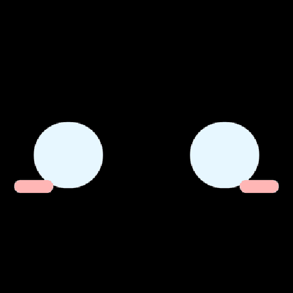

small anticipatory uplift, one soft blink, settle
原版关键帧 · 原版动画 · 五段本地动作小样

small anticipatory uplift, one soft blink, settle
slow float down, lazy double blink, settle
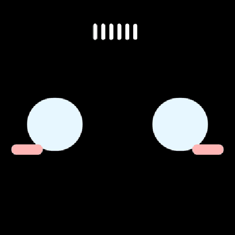

pulse the three cyan bars in sequence while eyes stay calm

gaze up-left, thoughtful pause, one eye narrows, return
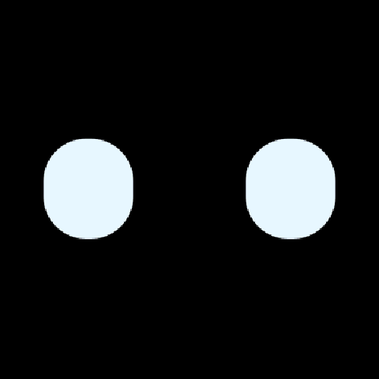

notice, brighten, rebound in a small buoyant bounce, settle
fast delighted widening, small rise, gentle settle
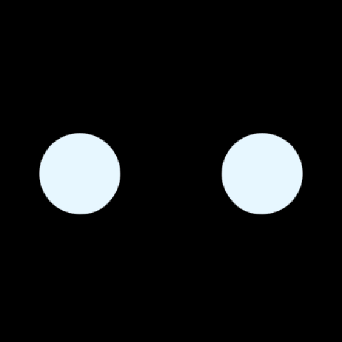

sharp recoil, hold very still for a beat, cautious recovery
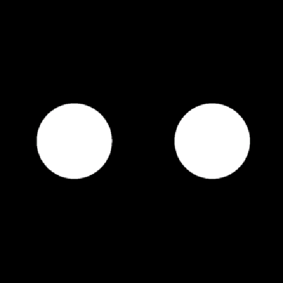
ease into a diagonal tilt, hold two beats, straighten
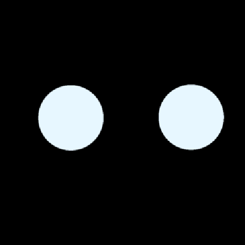
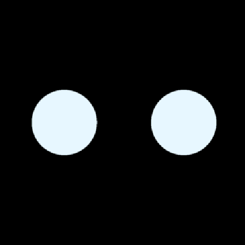
hold a left glance, sweep to right, center
one distinct left wink, playful hold, reopen both
two rhythmic side-to-side leaning beats, mirror timing not the art
small off-balance left then right wobble; damp quickly
exhale-like slow lowering of lids and float back up
two sleepy dips, briefly almost shut, lift halfway
two elastic laughing pulses and a held smile-shaped eye pose
small left-right switch in eye scale, freeze on the silly pose
dark pupils round into hearts and gently pulse once
quick glance away, pink dashes briefly light up, slow peek back
brief diagonal lifting of one eye, hold the confident look
small anticipatory squish, open into pleased crescents, two compact beats
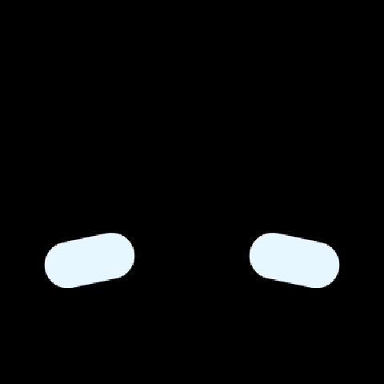
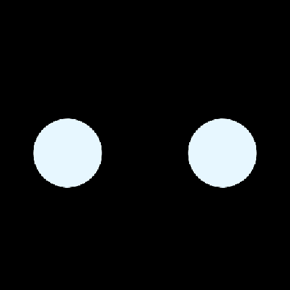
slow downward droop, linger, slow partial lift
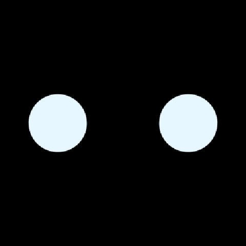
one clear tear slips and vanishes above subtitle margin, slight tremble
pupils converge, hold, pop back apart
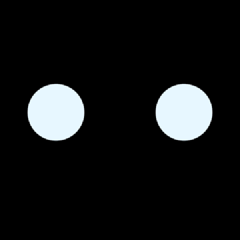

fast narrowing, brief huff-like compression, release halfway
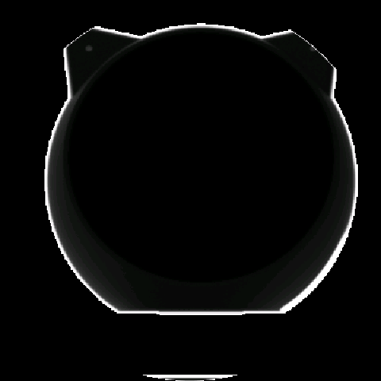

short modular scan alignment, briefly hold, dissolve accents
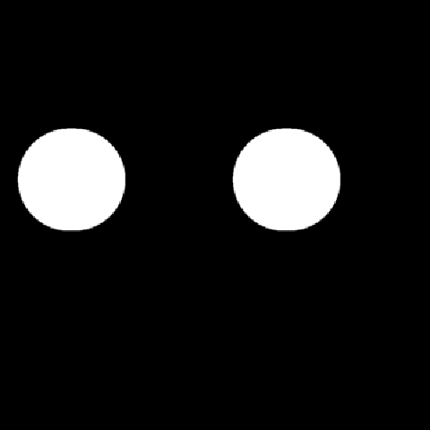
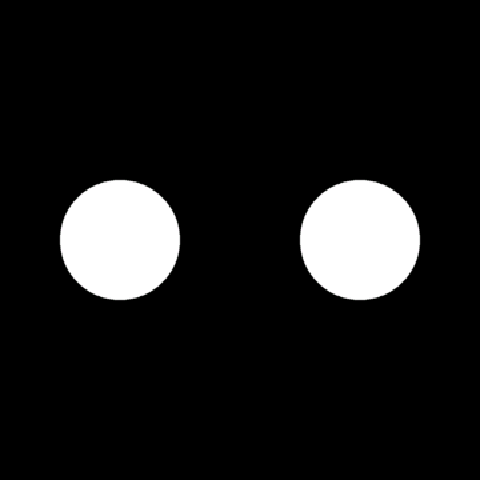
move both pupils from center to the viewer's left; hold; return
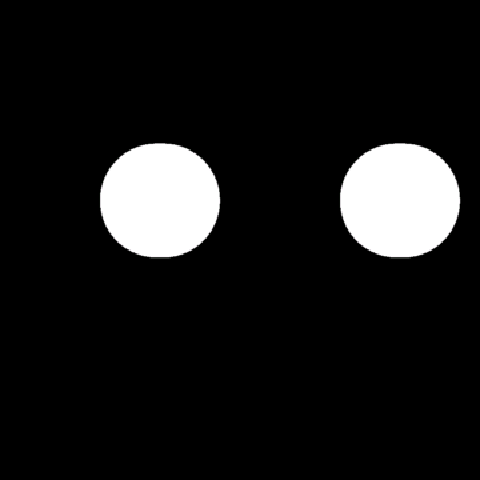

move both pupils from center to the viewer's right; hold; return
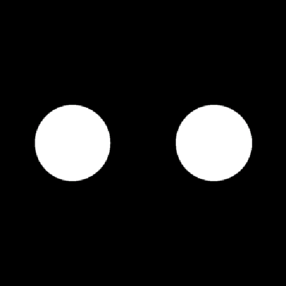
two distinct chew-like squash beats using eye shapes alone

heavy slow sink, hold, one effortful partial lift